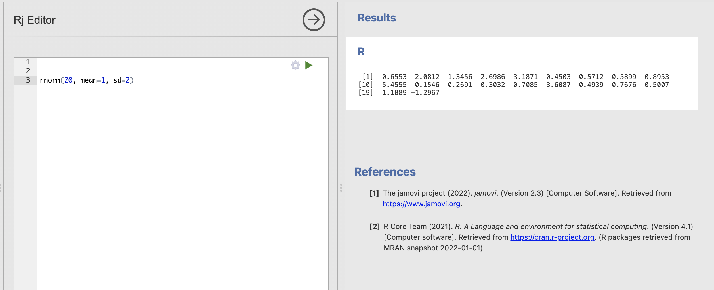

Week 8 : Simulating Sampling Distributions
The sampling distribution is central to how we can move from t-values to p-values - yet it is one of the trickier parts of this course. The lectures and pre-lecture materials frequently deal with computer simulations to show the properties of the tests we’re using, so this week you will write your own simulation to help understand the sampling distribution!
| Quantitative Methods | |
|---|---|
| Sampling Distributions | |
| t-values | |
| p-values |
| Data Skills | |
|---|---|
| Computing a one sample t-test in R | |
| Simulating data in R | |
| Writing loops in R |
| Open Science | |
|---|---|
| Creating shareable code to demonstrate a statistical concept |
1. The Dataset
The dataset this week is very simple - we’re going to create it ourselves using R. At this point, we know a lot about the types of questions that we can ask with t-tests and we know a lot about the data processing around it. We can check our understanding of different aspects of these statistical tests by simulating data samples that have known properties (eg mean and standard deviation) and checking if the outcome of the t-test is what we would expect.
This way we can numerically validate the tests we’re running and take a look under the hood and see what sort of processes Jamovi and R are using to compute the tests for us.
2. The Challenge
Today, we’ll first introduce some concepts and functions in R to simulate a data sample and compute our own one sample t-test. With that in hand, we will set up code to run thousands of tests in one go to help us to better understand sampling distributions.
3. Simulating data samples in R
The rnorm() function in R is used to generate random numbers from a normal (Gaussian) distribution. A call to rnorm() looks like this:
rnorm(n, mean = 0, sd = 1)We can see that rnorm() takes three values as inputs
| input | Description |
|---|---|
n |
The number of random numbers you want to generate, we always need to specify this. |
mean |
The mean (average) of the normal distribution. The default value is 0 if it isn’t specified |
sd |
The standard deviation of the normal distribution. The default value is 1 if it isn’t specified |
So we could tweak these input arguments to simulate any number of data points from any normal distribution that we wish.
What code would we need to write to simulate the following?
20 data points from a distribution with mean of 1 and standard deviation of 2
- R code here -> .
33 data points from a distribution with mean of -3 and standard deviation of 1.23
- R code here -> .
five thousand data points from a distribution with mean of 1.789 and standard deviation of 18.2
- R code here -> .
Open Jamovi, install the Rj add-on and open a new Rj window before we go any further
We can use rnorm() within the Rj code window as usual. Here I’m simulating 20 data points from a distribution with a mean of 1 and a standard deviation of 2. Try running the same code in your window.

These 20 simulated numbers could now represent a data sample for a variable in an analysis. The difference is we have absolute confidence about the ‘truth’ of the population statistics underlying this data sample.
You may notice that you do get 20 numbers, but that you get a different 20 numbers than I did! This is as rnorm() works hard to generate random numbers that are different each time. You can verify this by running your code multiple times, even though the code stays the same you will get a different data sample each time. Remember that the code and the underlying distribution remain the always the same but the data sample is changing.
This is actually a good thing for us. Real experiments and data collection always have an element of random luck and we want our simulations to reflect this as well.
Its tricky for a tutorial though, we want to make sure you can compare your code to mine and have confidence in your work. We can constrain the randomness a little to make sure that our random number generators produce samples the same way each time using hte set.seed() function. This takes an arbitary reference value and will ensure that random numbers are generated the same way each time.
For example, if we set the reference to set.seed(123) then we should all get the following numbers.

Try running this several times, the numbers should now stay the same everytime (unless you change the options in the function call).
3. Simulating data samples in R
Generate 10 random numbers from a standard normal distribution (mean = 0, sd = 1):
random_numbers <- rnorm(10) print(random_numbers) Generate 10 random numbers from a normal distribution with mean = 5 and sd = 2:
random_numbers <- rnorm(10, mean = 5, sd = 2) print(random_numbers) Generate 1000 random numbers and plot a histogram:
random_numbers <- rnorm(1000, mean = 0, sd = 1) hist(random_numbers, breaks = 30, main = “Histogram of Random Numbers”, xlab = “Value”, col = “lightblue”, border = “white”)
# Set parameters
set.seed(123) # For reproducibility
n = 30 # Sample size
mu = 0 # Population mean
sigma = 1 # Population standard deviation
comparison_value = 0 # Pre specified comparison value
num_simulations = 1000 # Number of simulations
# Initialize a vector to store t-values
t_values = numeric(num_simulations)
# Loop to perform simulations
for (i in 1:num_simulations) {
# Generate a random sample
sample <- rnorm(n, mean = mu, sd = sigma)
# Calculate the sample mean and standard deviation
sample_mean <- mean(sample)
sample_sd <- sd(sample)
# Calculate the t-value
t_value <- (sample_mean - comparison_value) / (sample_sd / sqrt(n))
# Store the t-value
t_values[i] <- t_value
}
# Plot the sampling distribution of t-values
hist(t_values, breaks = 30, main = "Sampling Distribution of t-values",
xlab = "t-value", col = "skyblue", border = "white")